Abstract
I reconstructed color photographs by aligning three filtered exposures of each scene. I compared mean squared error and normalized cross-correlation for single-scale alignment, then used a binomial image pyramid to align the full-resolution scans efficiently.
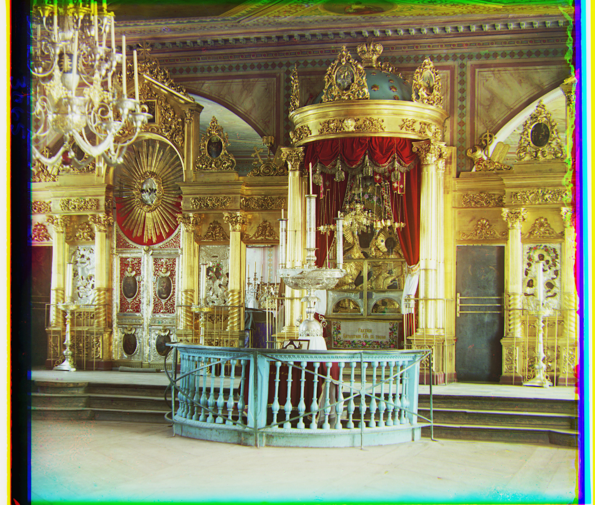
1. Three exposures, one scene
In the early twentieth century, Sergei Prokudin-Gorskii photographed scenes through blue, green, and red filters in succession. The scans used here are preserved by the Library of Congress.
In the supplied scans, the three exposures are stacked vertically: blue at the top, green in the middle, red at the bottom. I divided each scan into three equal-height pieces. Their values were interpreted as the blue, green, and red output channels. Combining them without alignment creates colored fringes along edges.
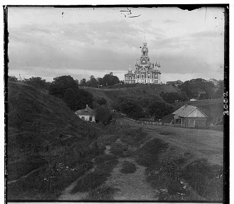
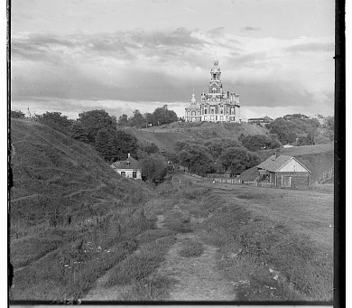
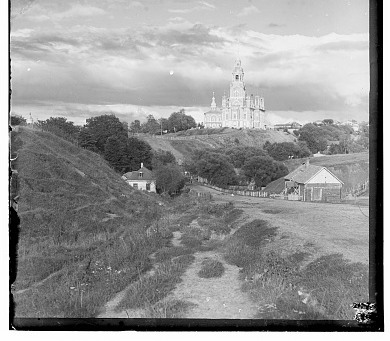
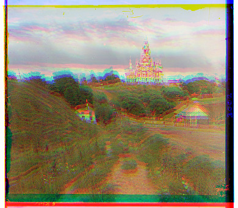
The task is now to align the exposures horizontally and vertically, keeping blue fixed and shifting green and red to match it.
2. Finding the right shifts
The naive method: exhaustive search
The naive approach tests every integer shift in a window such as [−15, 15]² and keeps the best-scoring alignment. This gives 961 candidates per channel. I compare candidates using either mean squared error or normalized cross-correlation.
Pixel differences
For vectorized patches A, B ∈ ℝn, minimize the mean squared error:
Account for brightness differences
A red roof may appear bright through the red filter and dark through the blue one. To compare the spatial pattern while discounting additive brightness offsets and positive intensity scaling, center and normalize both patches:
Here μA and μB are the patch means.
Now, when we calculate the squared distance between the normalized patches, we get:
Therefore, maximizing NCC minimizes Euclidean distance between the normalized patches.
Single-scale results


| Image | MSE (L2-equivalent) | NCC |
|---|---|---|
| Cathedral | (2, 5) / (3, 12) | (2, 5) / (3, 12) |
| Monastery | (2, -3) / (2, 3) | (2, -3) / (2, 3) |
| Tobolsk | (3, 3) / (3, 6) | (3, 3) / (3, 6) |
3. Making images smaller
Large scans can require shifts much greater than 15 pixels. Reducing the image also reduces the displacement. But consider a row alternating black and white: keeping every second pixel produces either all black or all white. This is aliasing. We smooth the image before reducing it to suppress this fine detail.
A three-pixel average
Start with a symmetric three-pixel filter [a, b, a]:
- Keep a constant region unchanged. The weights must sum to one, so 2a + b = 1.
- Cancel the alternating pattern. Around a −1 center with +1 neighbors, the output is 2a − b. Set this to zero.
These constraints give a = ¼ and b = ½:
A five-pixel filter
Canceling the alternating pattern does not remove all detail that can alias. Applying the average twice gives stronger smoothing:
This binomial kernel is symmetric and sums to one. I use it at each pyramid level. More smoothing would suppress fine patterns further, but also blur features needed for alignment. I chose five weights without comparing other filter lengths.
4. Finding shifts efficiently
Repeatedly blur and halve the dimensions. This stack of progressively smaller images is an image pyramid. A 96-pixel displacement becomes 48, then 24, then 12 pixels after three reductions. Therefore, a small search can locate a large displacement in the original scan.
- Start small. Search a window of candidate shifts in the smallest pair of images.
- Convert the coordinates. Double the winning horizontal and vertical shifts when moving to the next larger level.
- Refine locally. Search small corrections around that doubled estimate. Repeat until reaching the original image.
A coarse pixel at (x, y) comes from (2x, 2y) at the next finer level, so both shifts double. The local search corrects for rounding and details lost during smoothing.
The baseline reconstructions use raw-pixel NCC, a 10% scoring margin, a coarse target of 256 pixels on the longer side, an initial ±15-pixel search, and ±4-pixel corrections. Alignment uses the full-resolution scans; the images below are resized for display.
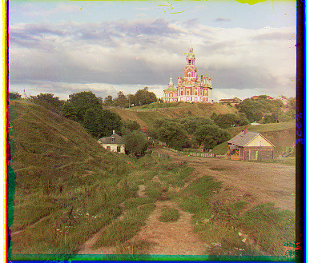
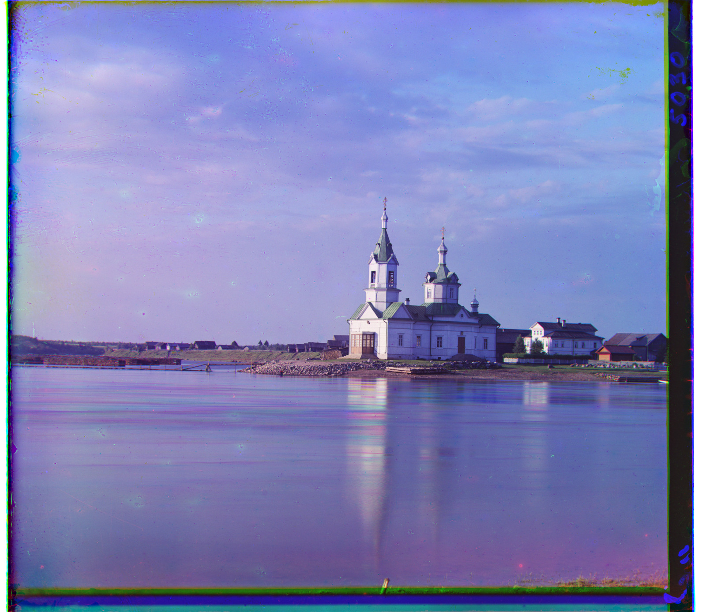
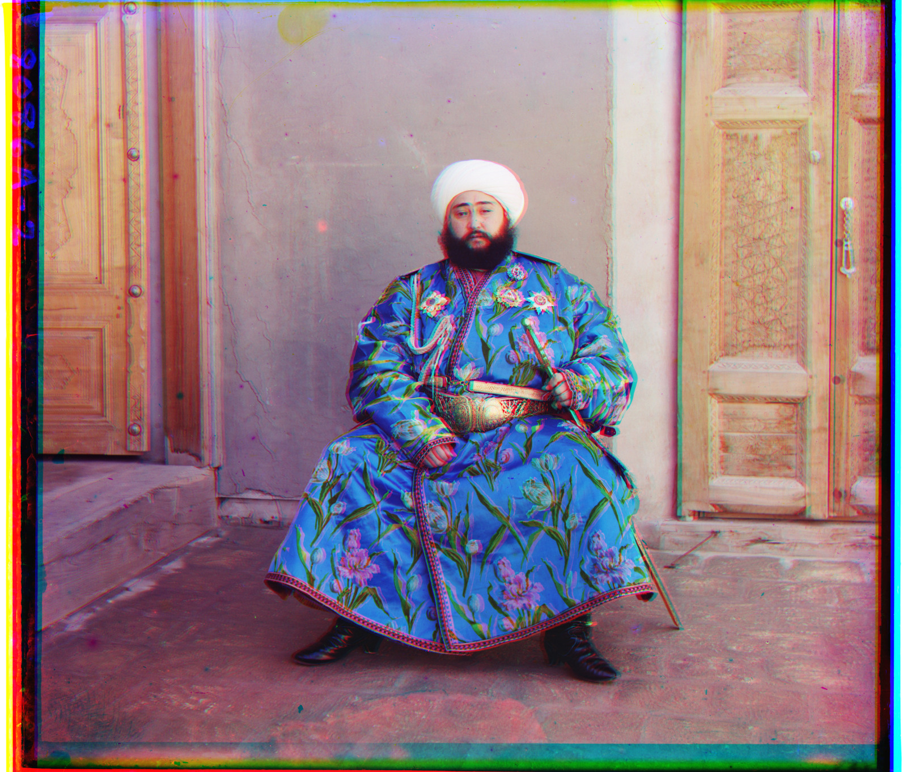
Red/cyan fringes remain around the robe and face. Failure analysis.
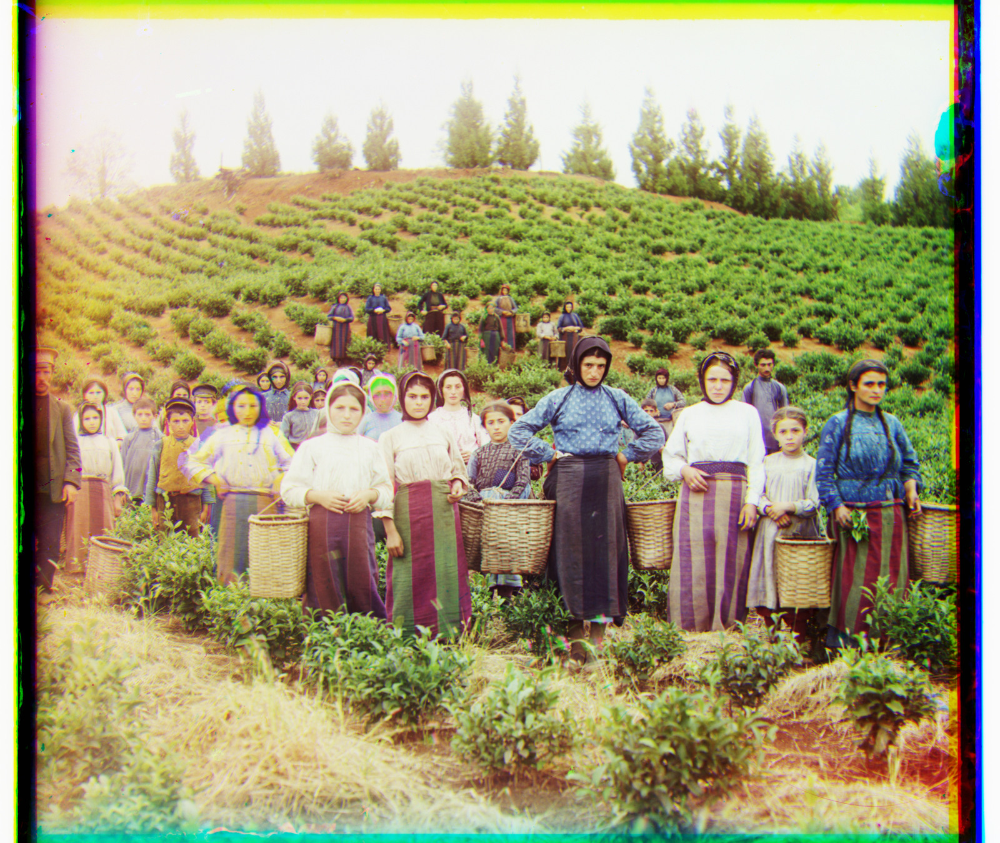
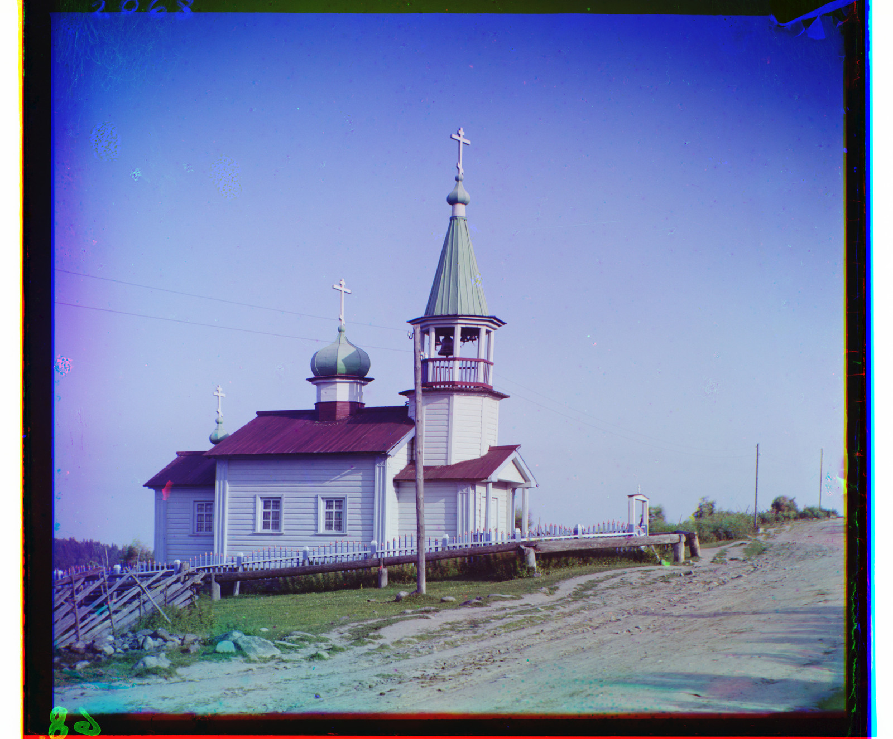
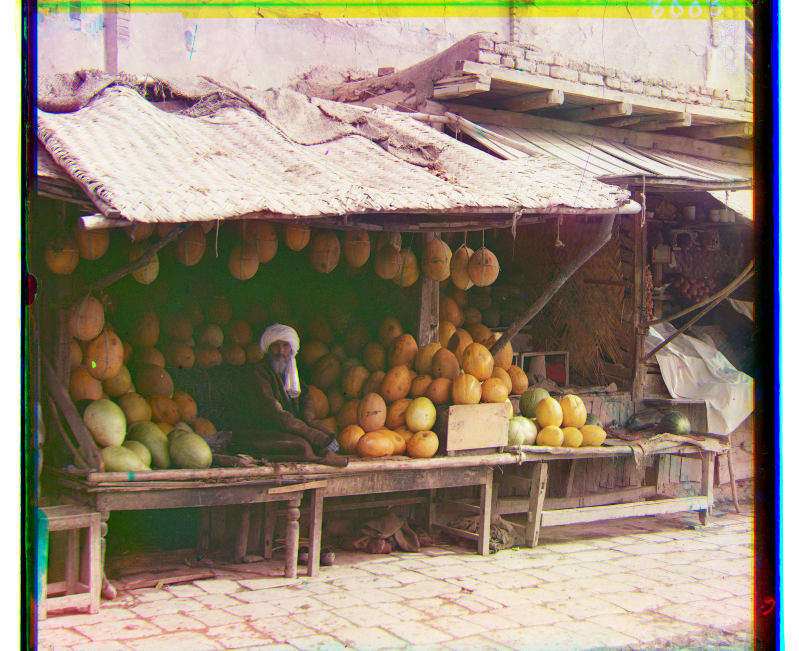
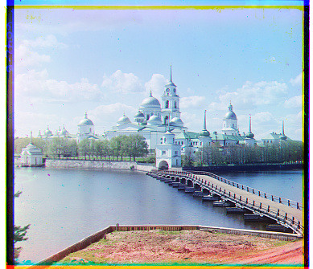
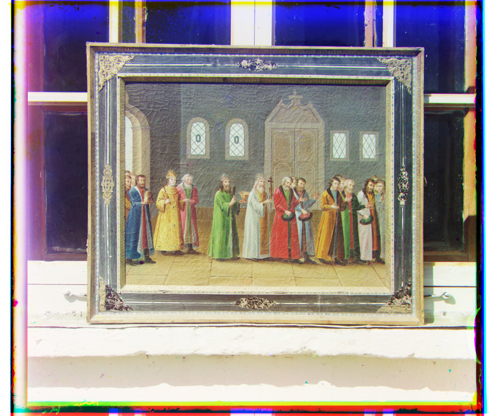
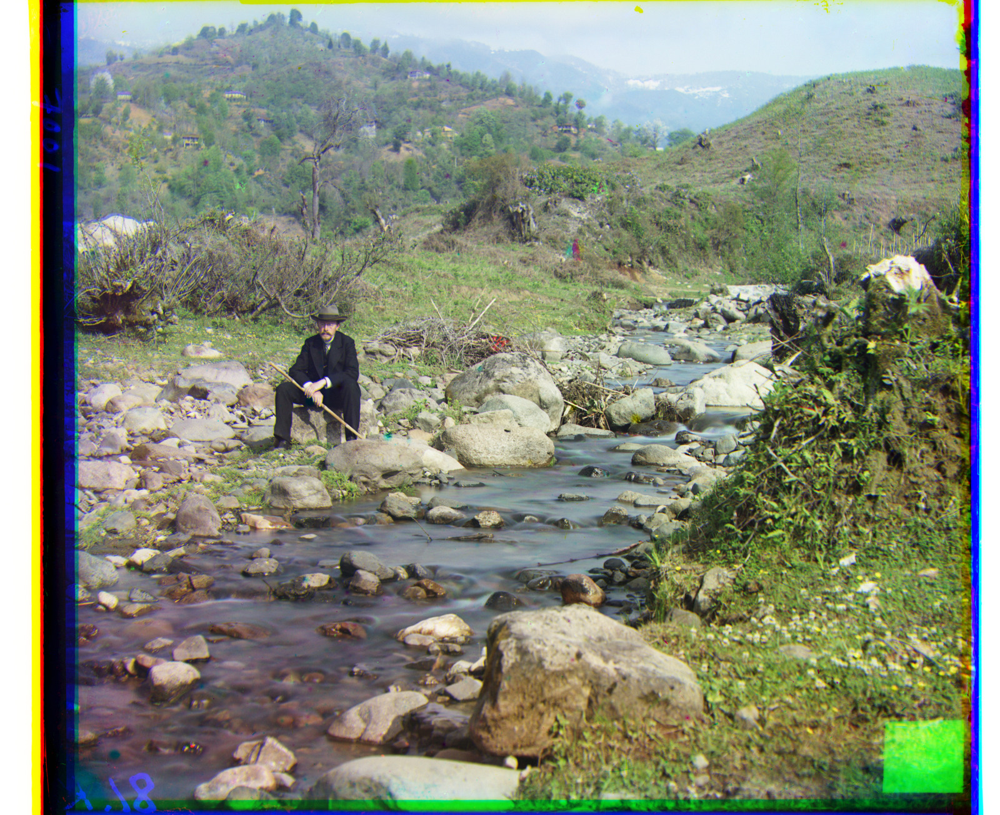
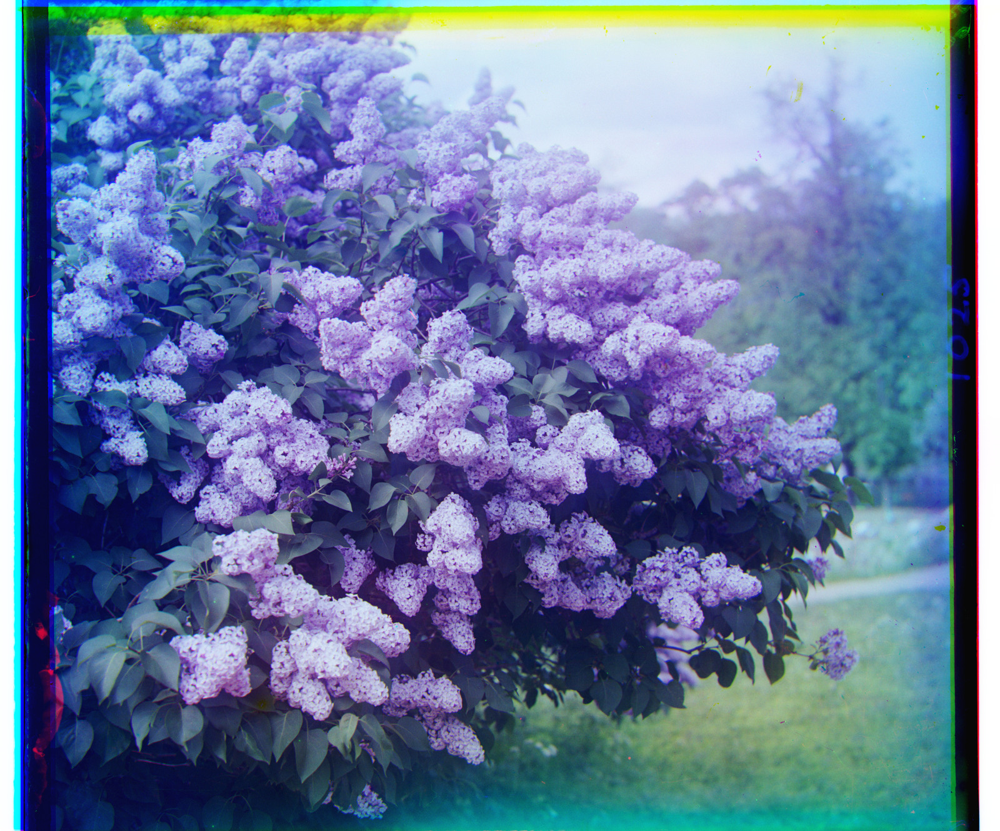
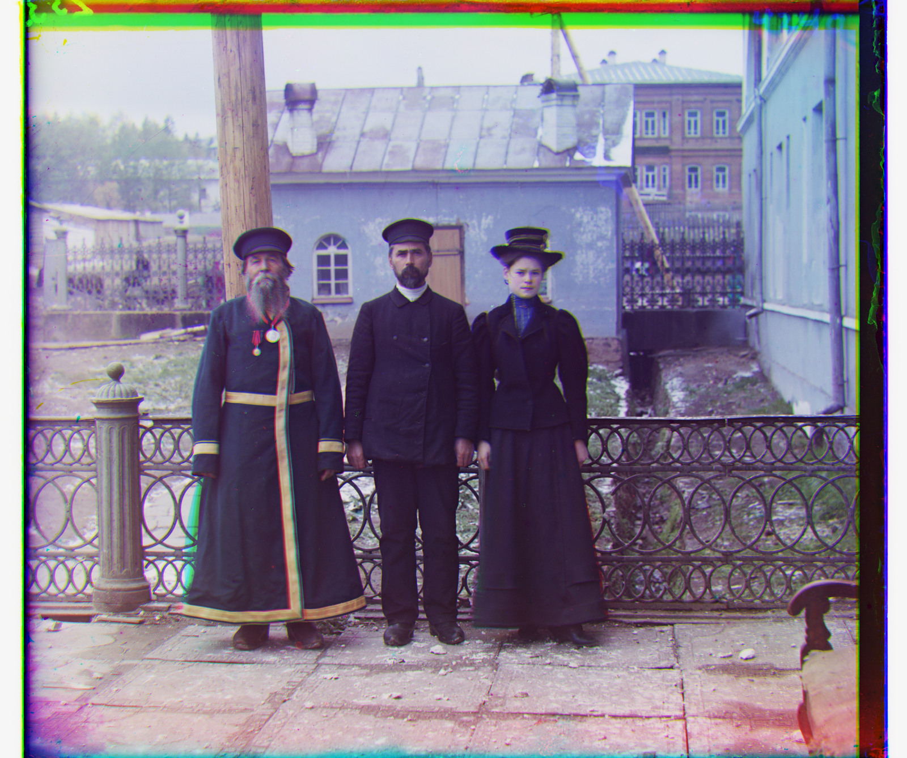
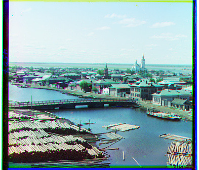
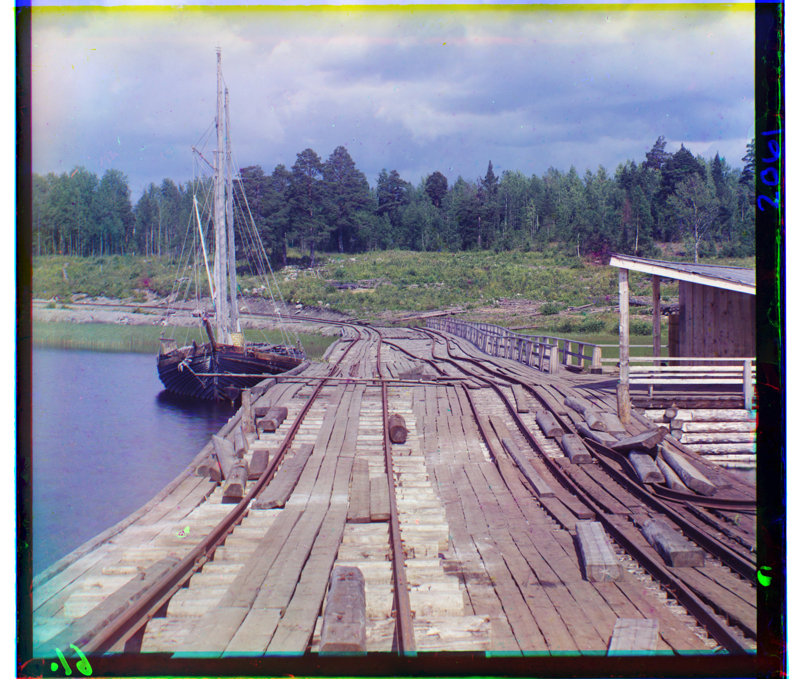
5. Why Emir is misaligned
In the raw-intensity reconstruction of Emir, red and cyan edges remain separated around the face, turban, and robe. The red exposure has not lined up with the other two, even though the large displacement has been corrected.
NCC removes a global brightness offset and scale. If corresponding patches satisfy R = aB + b, with a > 0, subtracting their means and normalizing makes them identical. Different color filters, however, change the relative brightness of different materials. The blue robe, skin, white turban, and background need not share one scale and offset. Normalization cannot remove these differences, so a shift that improves raw-pixel correlation can still leave corresponding edges misaligned.
I checked whether the refinement window was too small by widening it from ±4 to ±8 pixels while keeping the other settings fixed. Both runs returned the same red shift, (x, y) = (57, 105), and the same visible fringes. This points to the red–blue intensity comparison as a likely source of the error. The pyramid speeds up the search, but it uses the same brightness comparison at every level.
Aligning edges
The robe may be bright in one exposure and dark in another, but its outline still traces the same shape. This suggests matching where brightness changes sharply. Gradient magnitude is small in nearly uniform regions and large at boundaries, turning each exposure into a map of edge strength.
Since differentiation also emphasizes pixel-scale noise, I first smoothed each pyramid level with the same binomial filter, then computed its gradient magnitude:
The derivatives use finite differences. Taking the magnitude makes a dark-to-light boundary and a light-to-dark boundary comparable. For a global brightness change, E(aI + b) = |a| E(I), so even a contrast reversal preserves edge strength up to scale. I then applied the same NCC search to these edge images and reconstructed color from the original samples.
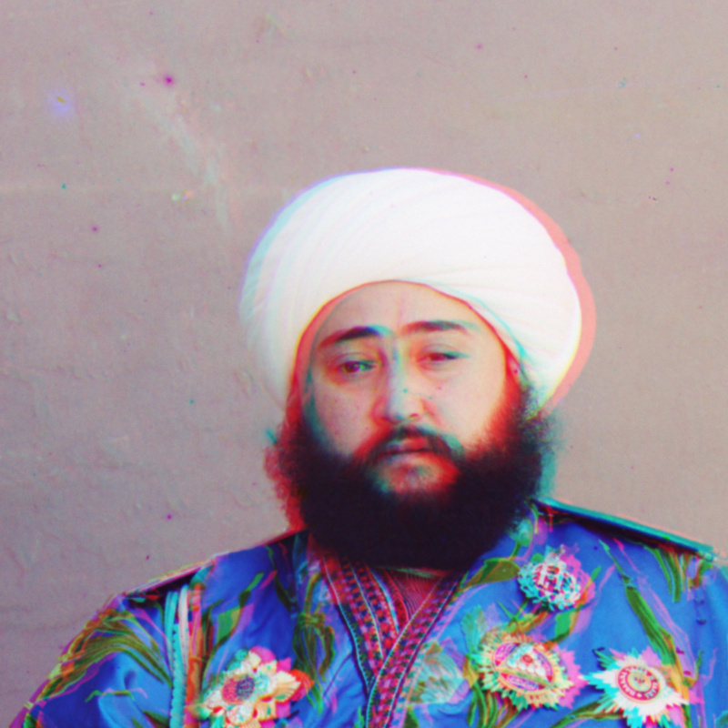
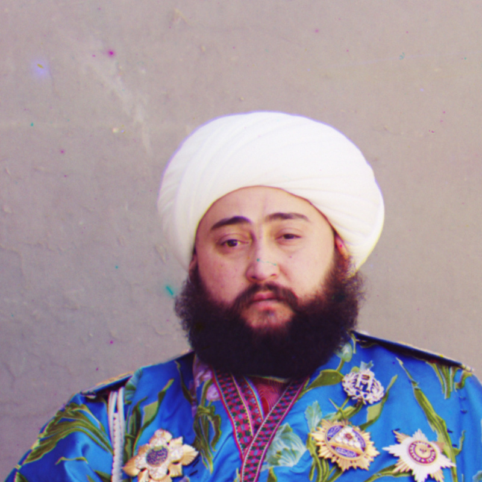

Both crops show the same 800 × 800 region in blue coordinates. Edge alignment changes Emir's green shift to (23, 49) and red shift to (40, 107), removing the prominent red/cyan doubling around the face and turban. I ran the same edge method on all 17 scans; shifts in the other 16 changed by at most three pixels per axis. No new large misalignments appeared, though the religious painting shows slightly stronger local color fringes.
6. Three more archival photographs
These three Library of Congress scans use the same algorithm and settings.
7. Offsets and timing
Offsets are relative to blue, written (x, y) in original-image pixels. Positive x moves right; positive y moves down.
With raw-intensity NCC, 16 of 17 reconstructions appear aligned; Emir retains visible color fringes. Median total processing time was 4.74 s, and the slowest scan took 6.54 s.
| Image | Channel size | G (x, y) | R (x, y) | Alignment | Total | Visual check |
|---|---|---|---|---|---|---|
| Cathedral | 390 × 341 | (2, 5) | (3, 12) | 0.11 | 0.12 | aligned |
| Church | 3634 × 3202 | (4, 25) | (-4, 58) | 4.10 | 4.54 | aligned |
| Emir | 3702 × 3209 | (24, 49) | (57, 105) | 4.40 | 4.74 | misaligned |
| Harvesters | 3683 × 3218 | (17, 60) | (14, 124) | 4.12 | 4.41 | aligned |
| Icon | 3741 × 3244 | (17, 41) | (23, 89) | 4.11 | 4.59 | aligned |
| Ilemselga | 3800 × 3270 | (7, 40) | (11, 130) | 4.52 | 4.98 | aligned |
| Melons | 3770 × 3241 | (11, 82) | (13, 179) | 4.12 | 4.43 | aligned |
| Monastery | 391 × 341 | (2, -3) | (2, 3) | 0.13 | 0.14 | aligned |
| Religious painting | 3742 × 3193 | (3, 28) | (7, 68) | 5.01 | 5.32 | aligned |
| Self portrait | 3810 × 3251 | (29, 79) | (37, 176) | 4.43 | 4.84 | aligned |
| Siren | 3817 × 3250 | (-6, 49) | (-25, 96) | 5.06 | 5.45 | aligned |
| Three generations | 3714 × 3209 | (14, 53) | (11, 112) | 3.84 | 4.20 | aligned |
| Tobolsk | 396 × 341 | (3, 3) | (3, 6) | 0.13 | 0.14 | aligned |
| Wharf | 3761 × 3244 | (-7, 15) | (-16, 83) | 4.73 | 5.06 | aligned |
| Head study | 3761 × 3212 | (9, 55) | (11, 117) | 5.48 | 6.00 | aligned |
| Scientific laboratory | 3742 × 3212 | (47, 52) | (77, 113) | 6.08 | 6.54 | aligned |
| On the way to Yurezan Bridge | 3770 × 3244 | (25, 55) | (34, 117) | 4.60 | 4.99 | aligned |
8. References
- UC Berkeley CS 180, Project 1: Images of the Russian Empire. Problem definition, baseline methods, and required experiments.
- Library of Congress, Color Photography Method. Historical capture and reconstruction context.
- Foundations of Computer Vision, Chapter 17: Blur Filters. Binomial filters, composition, and separability.
- Foundations of Computer Vision, Chapter 21: Downsampling and Upsampling Images. Sampling, aliasing, and filtering before reduction.